Ram Balloon Deck |
|||
Submitted by: Fishslap |
Arena 9 - Jungle Arena | ||
| 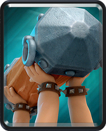 | 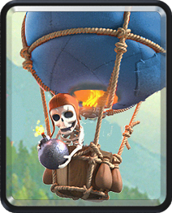 | 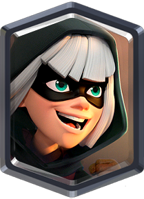 | 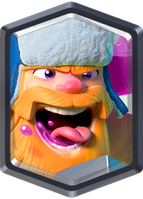 |
| 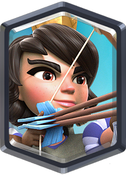 | 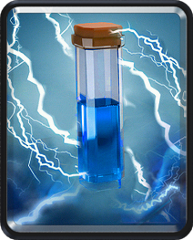 | 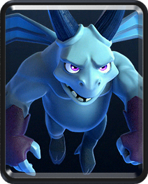 | 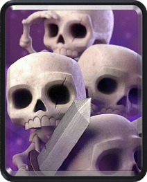 |
On offense (pushes):
On defense:
|
|||
Graveyard Freeze v2.0 |
|||
Submitted by: Loman |
Arena 10 - Hog Mountain | ||
| 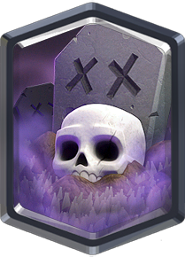 | 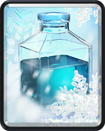 | 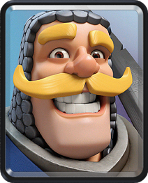 | 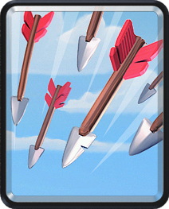 |
| 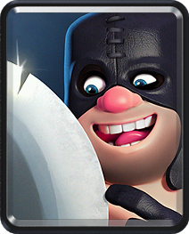 | 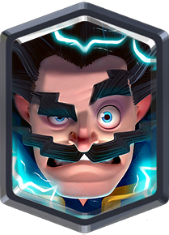 | 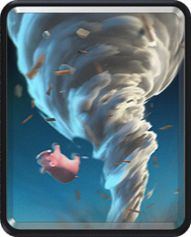 | 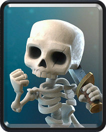 |
|
One flaw with this deck is cycling. You can end up with bad starting hands. For example, Graveyard, Freeze, Tornado, Arrows. You can do one of 2 things in this situation. Either Graveyard and draw a reaction but don’t overcommit, try and figure out your opponents counters early on and figure out what sort of match-up you have and how you will go about facing them. Try and avoid a starting move like Executioner in the back because that is inviting trouble from the other lane, in which case more times than not it’s best to ignore it and go all in if you know you will lose the Tower. Now knowing your opponents deck you want to anticipate the counters. You probably won’t get it all the first time but as you realize your opponents cycle you can throw predictive Tornados, Arrows etc. Around this time you will need to also pay attention to Graveyard placements there are two basic Graveyard placements which you will transition between depending on some cards in the deck. Keep in mind you can also play it all the way in the back and whatnot, honestly I switch things up from time to time but you need to really pay attention to these 2 basic placements. By now you either have chipped out a majority of the Tower or taken one and are defending. This deck is mainly a 1 crown deck. If both players are 1 Tower down, typically you will be at a disadvantage compared to your opponent. With an Executioner and Knight and E-Wiz there’s really not much a deck can do, just try and avoid giving opponent value. Or use the Knight to protect your E-Wizard etc. Utilize Tornado while Executioner shreds and you should be good. |
|||
Dark Hog Exe |
|||
Submitted by: Eater of Hope |
Arena 11 - Legendary Arena | ||
| 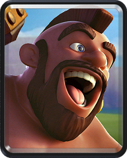 | 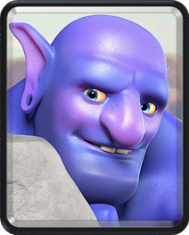 | 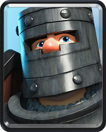 | |
| 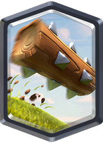 | 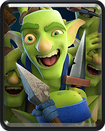 | ||
|
When attacking, you want to maintain constant pressure, keeping your opponent over-countering your pushes and crying when you destroy his Tower. At the start of the game, my first move is usually to drop a Princess directly on the bridge. Unless your opponent also places something there at the same time, the Princess should get at least two hits off the Tower before getting killed. Your starting hand may not include Princess, but that’s okay. Starting with an Executioner at the back is good too, but you’ll wanna save your Bowler for E-barbs. If your opponent starts a big push on the other side, make sure you feel confident on defense and then push on his other Tower. This will force him to use his Elixir to counter your push instead of fueling his. If your battle comes down to OT, give it all you’ve got. Keep constant pressure on your opponent, launching push after push against his remaining Tower, keeping enough Elixir to defend, but using enough for your pushes to be deadly. If you’ve fallen under your opponent’s cycle, defend. The best you can hope for is a draw, but if you see an opportunity to damage his Tower, take it. Sometimes with this deck, you’ll manage to pull through. You’ve probably noticed that almost all the pushes I mentioned use Hog. If you aren’t a Hog user, this deck isn’t for you. Also, if you aren’t happy with the pushes I posted above, do whatever you feel like, not all of those pushes work for everyone. |
|||